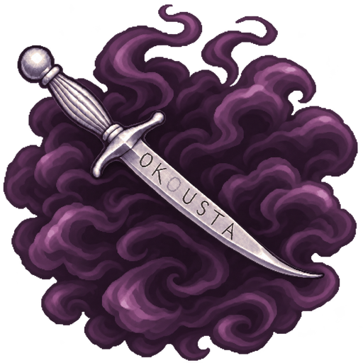

Save the panel conversation after each reply.
The helper reads keys from its environment or ~/.config/okusta/keys.json.
~/.config/okusta/keys.json
The test sends “Reply with OK” and may incur a charge. Continuing sends this entry’s conversation and any picked source to the selected provider.
Disconnected
Decimal GB, rounded down to 0.01 GB. Blank uses 75% of the GPU.
Output limits apply on the next run. Restart vLLM for context or memory changes.
For SQLite, custom export folders and hosted models, run python scripts/desk-service.py.
python scripts/desk-service.py
Open Okusta from the toolbar to start a query or pick an element.
